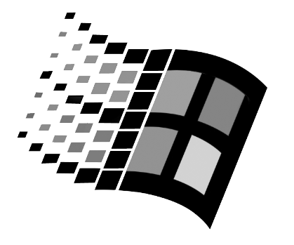
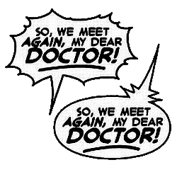
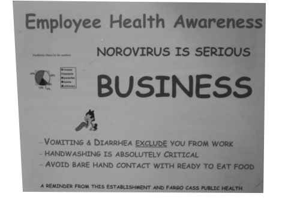
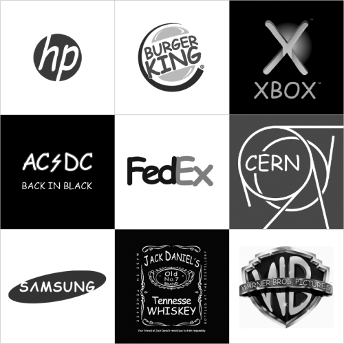
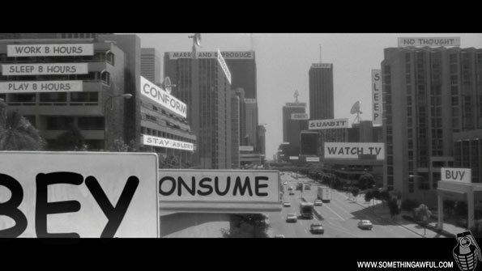

Comic Sans MS, commonly referred to as Comic Sans, is a sans-serif casual script
typeface designed by and released in 1994 by  Corporation.
It is a casual, non-connecting script inspired by , intended for
use in  and educational materials. The typeface has been supplied
with Microsoft Windows since the introduction of Windows 95, initially as a supplemental
font in the Windows Plus Pack and later in Microsoft Comic Chat. Describing it, Microsoft
has explained that "this casual but legible face has proved  with a wide variety
of people."The typeface's , often in situations for which it was not intended,
has been criticized.